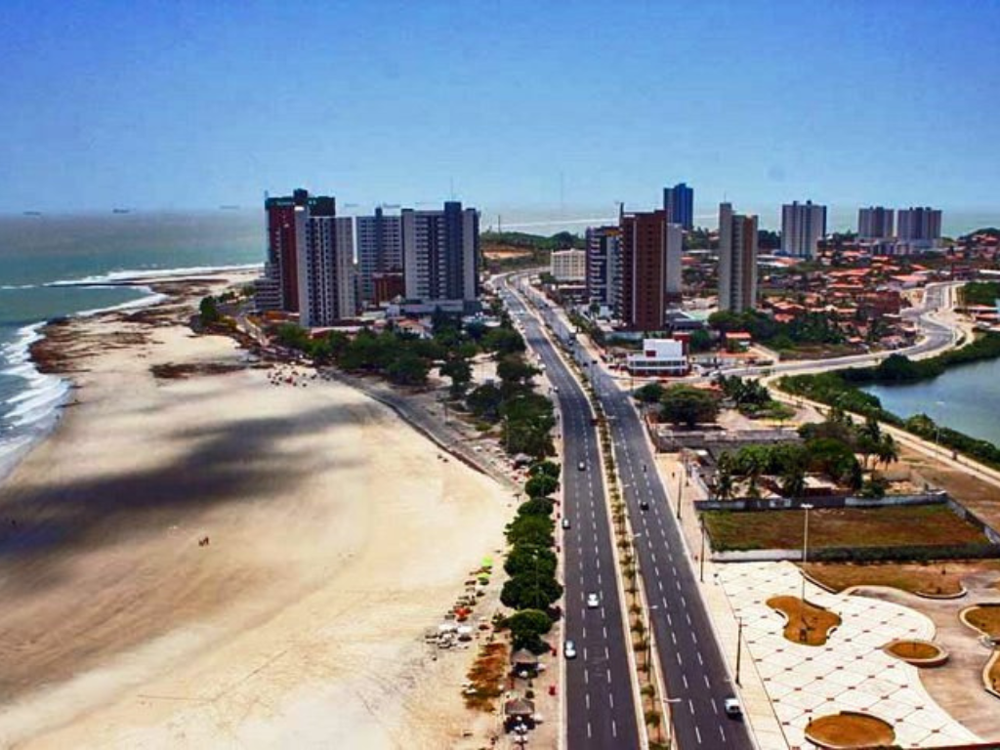

O estado do Maranhão está localizado na região Nordeste do Brasil e possui grande riqueza cultural e natural. Sua capital, São Luís, é conhecida pelo centro histórico e pelas tradições culturais, como o bumba meu boi. O Maranhão também abriga os famosos Lençóis Maranhenses, um dos principais pontos turísticos do Brasil. A economia do estado envolve agricultura, comércio, turismo e atividades portuárias.

Voltar